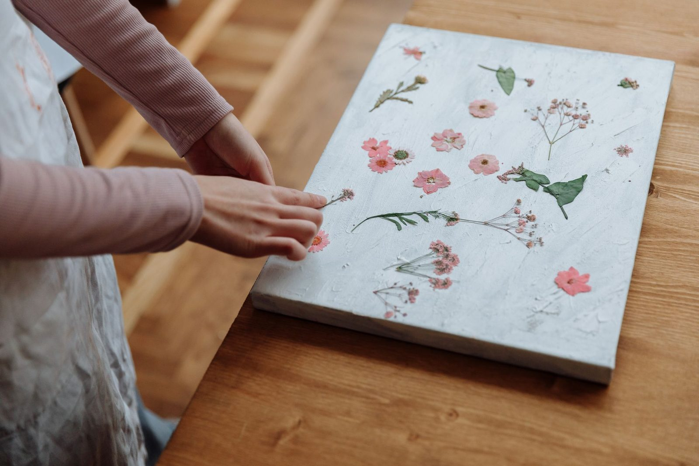

Naturopathy and Homeopathy
A Holistic, Root-Cause Approach to Whole-Body Healing
The Alchemy of Restoration: How Naturopathy and Homeopathy Support Whole-Body Healing
Naturopathy and homeopathy represent two distinct yet harmonic languages of healing. While one speaks to the tangible requirements of your biology, the other addresses the subtle intelligence of your vital force.
Together, they create a comprehensive ecosystem of support that reaches the deepest layers of human physiology and spirit.
The Origins of Naturopathy and Homeopathy: A Legacy of Natural Healing
Though often categorized as "alternative" in the modern era, these practices are built upon ancient foundations.
While modern homeopathy was codified over 200 years ago, its core philosophical roots stretch back over 2,000 years to Hippocrates, the father of medicine, who first identified the law of similars. In much the same way, the roots of naturopathy are as old as humanity itself, originating from the primordial understanding that nature is the ultimate physician.
These are not new inventions, but the refined evolution of a timeless wisdom—one that has always sought to align the human body with the natural world.
What Is Naturopathy? Supporting Physical Health, Energy, and Detoxification
Naturopathy nourishes your body by providing the fundamental elements it was designed to receive.
It is the practice of returning to your biological roots—prioritizing whole-food nutrition, hydration, sunlight, and movement. By honoring your circadian rhythms and establishing firm energetic boundaries, you send a profound signal to your nervous system:
“You are safe. You have what you need.”
This approach does more than just "feed" your cells; it provides the raw materials for:
- Cellular repair
- Hormonal stabilization
- Systemic detoxification
It is a restorative force that builds, strengthens, and replenishes your physical body—filling the gaps where modern life has left you depleted.
What Is Homeopathy? Supporting the Body’s Natural Regulation and Balance
Where naturopathy builds structure, homeopathy recalibrates flow. It nourishes through "the subtle," utilizing energetic signals that remind your body how to regulate and release. Homeopathy does not impose change from the outside—it invites it from within.
By offering gentle, highly specific cues, homeopathy speaks to your body’s innate intelligence. It acts as a mirror, reflecting patterns of disharmony so your body can recognize and resolve them.
It is a quiet reminder to your system:
“Here is the map you misplaced. You may return to balance now.”
How Naturopathy and Homeopathy Work Together for Holistic Healing
When these two disciplines converge, they support your health across every dimension:
Physical Health and Function
They optimize digestion, energy production, and the structural integrity of your cells.
Emotional Balance and Nervous System Support
They soothe the sympathetic nervous system, fostering a sense of internal safety and resilience.
Energetic Flow and Stress Release
They facilitate the release of stagnant patterns and accumulated stressors that no longer serve you.
Spiritual Alignment and Clarity
They restore a sense of alignment and clarity, reconnecting you to your natural state of being.
The Relationship Between Naturopathy and Homeopathy in Root-Cause Care
The relationship between these two modalities is one of construction and clarity:
- Naturopathy builds the house, providing the bricks and mortar of health
- Homeopathy clears the pathways, ensuring communication and flow remain unobstructed
Naturopathy nourishes your body’s structure, while homeopathy nourishes its wisdom. This is support at its most profound level—a dual approach that ensures you are both physically supported and deeply aligned.
A Holistic Approach To Healing the Whole Person
This is a reminder that your health is not one-dimensional.
You are not just a collection of symptoms—you are a system, a pattern, a living intelligence.
When your body is supported at both the physical and energetic levels, healing is not something forced.
It becomes something allowed.
A return to balance that has always been available to you.
